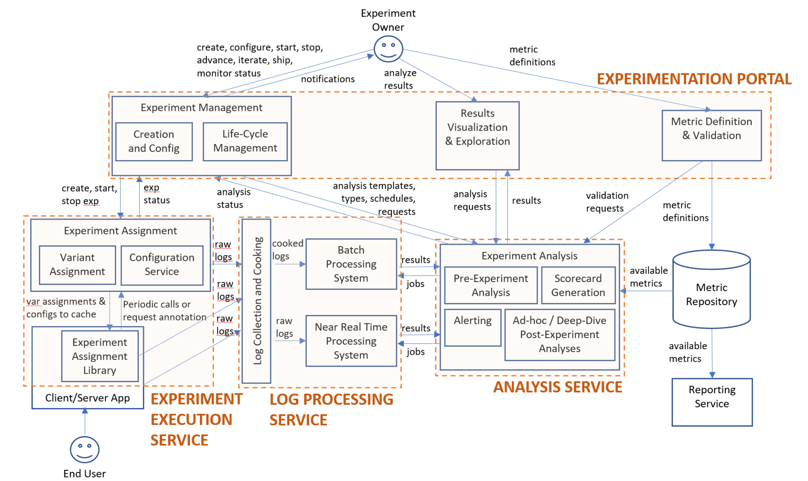
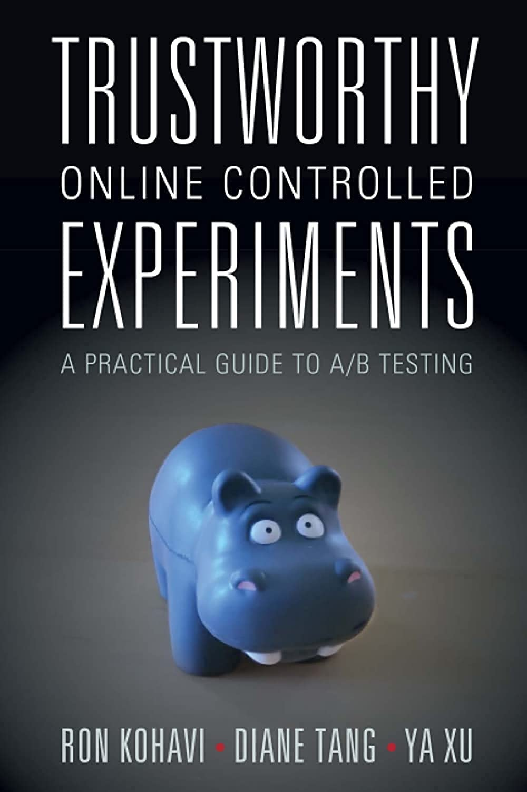

온라인 실험의 꽃: 문화 형성과 자동화
문화 형성, 자동화가 어느정도 레벨에 도달하기 이전에, 높은 레벨의 통계적 방법론을 연구하고 적용하는 것은 아무런 의미가 없다.
온라인 실험의 꽃은 “문화 형성”과 “자동화”에 있다.
문화 형성
문화 형성에 관한 의도적이고 각별한 노력 없이는 온라인 실험에 꽃을 피울 수 없다. 기업에 있어 문화란, 조직의 암묵적 사회 질서를 말한다(Gupta et al. 2019). 문화적 규범은 곧 조직 내에서 무엇을 권장하고 막을지, 무엇을 받아들이고 거부할지 결정하는 기준이 된다. 온라인 실험은 고객 중심의 제품을 만들어나가기 위해 실행되며, 실무자의 아이디어를 택할지 말지 결정하는 데에 중요한 역할을 한다. 온라인 실험이 곧 문화적 규범의 역할을 하는 것이다.
다른 말로는 이를 “실험 중심 제품 개선 문화”라고도 표현한다. 온라인 실험이 그 기업의 지속 가능한 도구가 되려면, 이 문화를 형성에 내는 것에 리더십을 중심으로 의도적이고 각별한 노력을 기울여야한다. 문화적 규범이 “온라인 실험”에 바뀌는 것에 맞추어 조직원들이 정당하게 평가를 받을 수 있도록 조정이 필요할 수도 있고, 조직 구성에 대한 변화가 필요할 수도 있다. 어느날 갑자기 내 아이디어를 “온라인 실험”이라고 하는 도구로 평가받는다는 것은 실무자 입장에서 굉장히 민감한 부분이기 때문이다.
이러한 이유에서 해외 테크 기업들은 실험 기반 제품 개선 문화를 형성하기 위해 기술 개발(e.g. 실험 플랫폼 개발, 통계적 방법론 연구) 외에 실험 확장을 위한 주기적인 직원 교육 및 치밀한 전략 수립하여 실행해왔다. (Gupta et al. 2019)에서 그 내용을 상세하게 확인할 수 있으며, 추후 별도의 글1로 해당 논문에 정리된 그들의 노력을 정리해보려고 한다. 그들이 기술 개발에만 치중했다면, 결코 전사 구성원이 실험을 중심으로 자신의 아이디어를 평가받는 “실험 중심 제품 개선 문화”를 형성하지 못했을 것이다.
자동화
자동화에 관한 의도적이고 각별한 노력없니는 온라인 실험에 꽃을 피울 수 없다. 앞서 이야기했듯 온라인 실험은 곧 기업의 문화적 규범 역할을 하며, 이는 자신의 아이디어를 평가받기 위해 온라인 실험을 실행해야한다는 것을 말한다. 온라인 실험을 기반으로 한 “정확한 평가”를 위해서는 많은 기술적 노력이 뒤따른다. 필수적인 요소들을 요약하면 다음과 같다2.
- 실험 전 단계: 고객 가치에 기반한 실험 설계 및 피쳐 디자인, 정교한 실험설계, 실험 전 편향 교정
- 실험 중 단계: 예상치 못한 효과의 조기 감지를 위한 모니터링
- 실험 후 단계: 적절성 검사, 통계 분석 결과 해석, 통계적 유의도와 실무적 유의도를 고려한 최종 의사 결정
조직 구성 유형에 따라 다르겠지만 PM, PO, 디자이너 등 평가를 받기 위해 온라인 실험을 실행해야 하는 각각의 구성원들이 이러한 모든 기술적 과정들을 혼자 진행하는 것은 불가능하다. 도메인 지식 뿐만이 아닌 엔지니어링, 통계학적 역량이 필요로 되기 때문이다.
따라서 이러한 과정들을 거쳐 정확한 평가를 내리기 위해서는 Data Scientist가 옆에 붙어있어야 한다. 그러나, 사내에 이러한 역량을 가진 Data Scientist들은 보통 손에 꼽는 숫자로 존재한다. 따라서 이러한 과정들을 자동화하여 온라인 실험을 스케일업 하는 것이 굉장히 중요한 포인트라고 할 수 있다.
이는 실로 굉장히 큰 대작업이다.

위 그림과 같이 기본적으로 실험 실행, 로그 프로세싱, 분석 서비스들을 관리할 수 있는 실험 플랫폼, 그리고 각 실험에 다양하게 존재하는 여러 지표들을 정의할 수 있는 정교한 메트릭 스토어가 필요로 된다(Gupta et al. 2018). 이렇듯 우리 기업 위에 온라인 실험을 이라는 꽃을 피우기 위해서는 문화 형성 뿐만이 아닌, 동료의 아이디어를 “빠르고, 정확하게” 평가하기 위한 자동화에도 의도적이고 각별한 노력을 기울여야 한다.
맺음말
처음엔 그저 통계학, 인과추론 등에 관한 관심과 현재 몸담고 있는 조직의 니즈로 인해 온라인 실험이라는 분야에 몰두하게 되었는데, 해외 테크 기업들이 써낸 아티클과 여러 논문들을 보고 실무에서도 구르다보니 결국 “온라인 실험”의 꽃을 피워내기 위해선 “문화 형성”과 “자동화”라는 두 가지 요소가 필수적으로 충족되어야 함을 깨달았다.
이를 깨달았기에 올해 1, 2분기에 가짜연구소에서 진행했던 실험 스터디를 추가로 진행하지 않기로 결정했다.

원래 계획은 Ron Kohavi의 저서(Kohavi, Tang, and Xu 2020)를 바탕으로 실험에 관한 서로의 기본적 이해를 맞춘 후, 통계적 방법론을 중심으로 논문 스터디를 해볼 요량이었으나.. 우리 업계에서 온라인 실험이라는 도구가 필요한 또는 이미 사용하고 있으나 스케일업에 어려움을 겪고 있는 사람들에게는 더 깊은 레벨의 통계적 방법론은 필요하지 않은 단계라는 확신이 들었기 때문이다.
나 또한 팀 스터디를 리딩하며, 그리고 홀로 통계적 방법론에 관한 아티클과 논문들을 여럿 보며 내가 알고있는 이론적 기술과 실제 내가 업무에 적용하고 있는 기술과 격차가 벌어지기 점점 더 크게 벌어지는 것을 느꼈다. 온라인 실험이라는 꽃을 피우기 위해 내가 속한 업무 환경 또한 앞서 이야기한 필수 요소인 “문화 형성”, “자동화”에 부단한 노력이 필요했기 때문이다. 문화 형성, 자동화가 어느정도 레벨에 도달하기 이전에, 높은 레벨의 통계적 방법론을 연구하고 적용하는 것은 아무런 의미가 없다.
온라인 실험에 적용되는 통계적 방법론에 관한 단순한 흥미로 공부를 시작했던 때가 엊그제 같은데, 완전히 다른 영역에 중요성을 느끼고 있는 것이 참 신기하다. 지난해 6-7월 즈음을 기점으로 다른 공부들을 제쳐두고 온라인 실험과 관련한 공부에 깊게 몰두하기 시작했던 기억이 나는데, 짧은 시간에 많은 것들을 깨닫고 성장한 것 같다는 느낌을 받는다. 내년 이맘때 쯤 G마켓의 실험 문화와 자동화 수준은 어느 레벨에 올라있을까? 지나온 길보다 앞으로 나아갈 길이 훨씬 더 많이 남았지만, 함께 노력해주는 동료들이 있기에 부단한 노력을 기울여보려고 한다.
References
Footnotes
정리 완료: https://www.taemobang.com/posts/2024-10-01-how-to-develop-experimentation-culture/↩︎
마침 이 부분에 관한 상세한 설명을 참고하면 좋은 2024 Korea Summer Workshop on Causal Inference 2024 발표 영상이 업로드되어 공유해본다: https://youtu.be/zcZ2vICGm1o?si=jy6mno97RVNBP1-U↩︎
Reuse
Citation
@online{bang2024,
author = {Bang, Taemo},
title = {온라인 실험의 꽃: 문화 형성과 자동화},
date = {2024-10-01},
url = {https://taemobang.com/posts/2024-10-01-essentials-for-experimentation/},
langid = {kr}
}